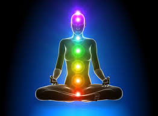
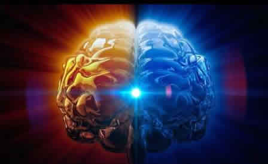

七，大勢至菩萨.......感覺回歸
行觀學者：她說：西洋聖母的……西洋女王啊﹐……什麼呢？剽悍啊。就是說，很勇猛的意思呀！
妙師：嗯！勇猛、剽悍、粗獷……
行觀學者：可……但是呢？挺豪放……
妙師：豪放……對，她們都是豪放型……
行觀學者：挺爽氣啊！但是那個西洋女王方面，都挺爽氣……

修行者第 261集 第六章外傳1997年11月23日晚十一點記錄：
西洋女王：身為山，心為水，靈為月，色為光……
行觀人問：為何色為光了？
西洋女王曰：若不以色轉化為光，光又是從何而來……色魂聚音光（光陰）。色化光也叫天地情……含萬物而化光亦是現在時的色回聚往日之光陰而化為天光。
行觀人問：請女王開示？
西洋女王日：以行為天，以道為本，以色為空，以情化空，無言不言，空覺月色，空中無色，月滿華光，空絕崑崙……
行觀人：說的這些又是個什麼？
西洋女王曰：感覺回歸……（註：感覺兩字是字音）
師：女王開示了一個極為重要的理論問題，即「感覺回歸」。出三界回歸的到底是什麼？自古以來……古人以「靈魂」這個名詞來表示回歸的「物」。女王開示的劃時代的理論是：回歸的是「感覺」……
你之所以認為自己存在，有你的那個「我」存在，僅僅在於你有「我」的感覺……你若沒有感覺，你就不會知道自己的存在。一個人死了,是因為這個人身失去了感覺……當感覺與人身是一體時，你會認為這個人身就是你……而當你的感覺離開人身時，你就不會認為那個人身是你……女神功法在於使學人找到你自己真實的感覺，這種「感覺」是不生不滅的……
1997年11月26日记妙师
甲：前几日西洋女王说的感觉回归……我认为这里面的问题就严重了……修来修去能否真的回归尚且不提，即便是真的回归……也仅仅是自己感觉着是回归了……？
乙：此一感觉非彼一感觉。试比较下列句型：
1．我感觉回归了。
2．我的感觉回归了。
才刚你说的属于句型一，西洋女王说的属于句型二。
并不是你自我感觉回归了，而是说你之所以是你的那个感觉回归了。
一个人，比如你，你之所以知道自已存在，是因为感觉使你产生得以知道你自己存在的感受。如果感觉不使你产生得以自知的感受，那么你就会不知道自己的存在，你也就不知道自己是谁？
神经病患者的病因就是一种感觉错乱，外来的感觉入侵与你自己的感觉交合，并且外来感觉占据了主控权……在中国古代，传统上把这种种病症称为“外感”。
精神病院医治的方法是把这种外感用药物麻醉，其不理想之处是原属于人体的感觉也遭受到药物的处理。除非是一种有选择攻击目标的药物，但目前的医药界尚对“外感”没有系统的理论研究。
原本在宙心深处……均呈现性海状。宙心的外旋使外层性海产生震荡,这种震荡产生一种音流……唵……最终使性海中的一部分表现为醒态，呈现醒态的这部分性海物称之为“觉”亦叫晨鸡星、凤、孔雀……酉表鸡，醒即鸡星，或曰为日。
觉众游离出性海产生了“感”，在三界外众天活动的统称为“感觉”。
我们称三界外的众感觉为仙神佛菩萨、天罗汉、天罗刹、众天王……称宙
心最外层的觉为大觉金仙、大佛、圣女、玉女。孔雀女、金毛狮子……
一部分感觉冲过断魂关进入了三界，渐渐造化了万物，其中包括人身。当感觉与人身这种形式的物和合时，这个有感觉的人身就称为活人。当感觉离开人身时，这个人就叫死人。
与人身结合的这个感觉分解为感和觉……这个觉又叫大灵，感又分解为色魂和音魂。
感觉的物理状态就是由光音色组成的生命冷光团。它总是表现为一轮明亮
的冷月。修行的第一步就是觅得这轮冷月，然后就是漫长的日月之旅。
科学仅仅在于在实验室里无法抓到感觉的物质态，无法把感觉放进烧杯里去测酸碱度和定性定量分析，无法把感觉放在精密天平上去称重……因为感觉就在科学家自己的身上，但又无法把它们抓下来……
甲：师又是如何训练行观人找到了自己的感觉？
乙：首先是观察，观察就是寻找突破口，然后冷不防的切入，甚至大骂一
顿……行观人的初始状态是……什么都信，又什么也不真懂，故而也就什么也不是真信，对什么都有怀疑或是潜在的怀疑。具体表现为社会上、周围的人，不论谁说的什么都会信以为真。
师首先训练其必须对什么也不信，同时对什么也不疑。即，令其先慢慢的找到自我……
破除这个法障、识障也不是一件易事……无论其听信了任何人说的任何事，师都毫不客气的一层层揭开其所信之事的伪装，逐步训练其不信一切。既然不信一切了，也就不怀疑一切了，因为信与怀疑是同时产生的。
当一个人不怀疑一切时，真实的感觉才会一点一点的显露……如果有怀疑，就等于给你自己真实的感觉封上了法障、识障。当你不信一切时，一切法障、识障就渐渐会瓦解。当你不信一切时，你平素的所谓感觉，即色声香味触法方可少对你起作用。如此即是一心禅……直指灵心。
整个261集《修行者》的文字，其用意即在于此。
1997年11月25日晚記妙師

佛學在理論以及方法上實際上都是從感覺上下手，比如斷六根除六塵。各種法門無非就是讓你從色聲香味觸法的凡俗感覺中超脫出來，以便去洞觀、洞察自己那真實的感覺，即眉心月……大顛和尚稱此月為佛面，即佛的面容。
佛這個名詞是梵語，這個字的本意就是覺。故而眉心月就是你的覺，有了覺之後方可通過長期洞觀而得悟，若無覺又哪裡來的悟？
感是一種相應，在《易》中是以咸卦來表示的，並以男女交合來描述感的相應關係。若從生命本質的角度分析，覺是靈心，感是萬緣。修行就是先把覺修出，第二步就是匯聚萬緣——感。最後是感覺破牢關渡青潭登月沖關回歸。
色空同觀的本質就是自證感覺在色界或是空界是無差別的，自證感覺在遍法界盡虛空是無差別的。
有一點必須清楚，心靈與萬緣的觸覺，與六塵作用你的六恨所產生的感覺，在性質上是不同的，可以說，幾乎一個人的一切感覺都是六塵作用的感覺，因為心靈與萬緣的感覺正常人是無法感知的。
甲：感覺的本質又是什麼呢？
乙：宇宙萬物萬類萬種萬法的本質是光音色……感覺就是這萬物萬類萬種所表現的萬法。感覺並不是抽像的東西，而是天地萬物相互以光音色作用而使某一特定的光音色產生變形、變態……這種種變形變態就稱之為萬法。
修行的本質就是力圖使「感覺」不變形變態，這種不變形變態的感覺在術語上就稱之為金剛法身．亦稱為萬法歸一，亦稱為不定態。這個金剛法身的物理態就是一個生命光團，它猶如大日，內中含有巨大的能量。
正常人通常的感覺，亦即六塵作用六根產生的反應，是屬於低級生命形態的本能反應，它的本質是生命色、音的互相作用。
甲：不信一切同時不懷疑一切……聽起來似乎矛盾？
乙：信一切暗含著疑一切，不信一切暗含著不疑一切。信與疑是同時產生的一組矛盾，不信不疑亦是一組相關的矛盾。
通常人進行修持，之所以無法涉入中、高層次，在心法上就是吃虧在又信又疑上……信則生法障，疑則生識障，六塵作用六根產生的低級形式的游離不定的感覺又會產生波動心，故而修來練去充其量也僅是在五層次裡轉來轉去。
唯不信，法障自破；唯不疑，識障不生；捨棄放下，六根不為六塵所動……久而久之方可突破第五大關。一旦衝過五關，第六層次……幾乎人人都會走麥城……
| 上 一 頁 | 下 一 頁 | 回 主 頁 |
Email: miduoyuan@126.com